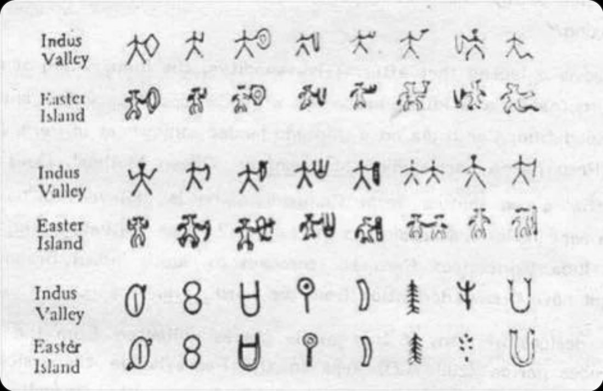
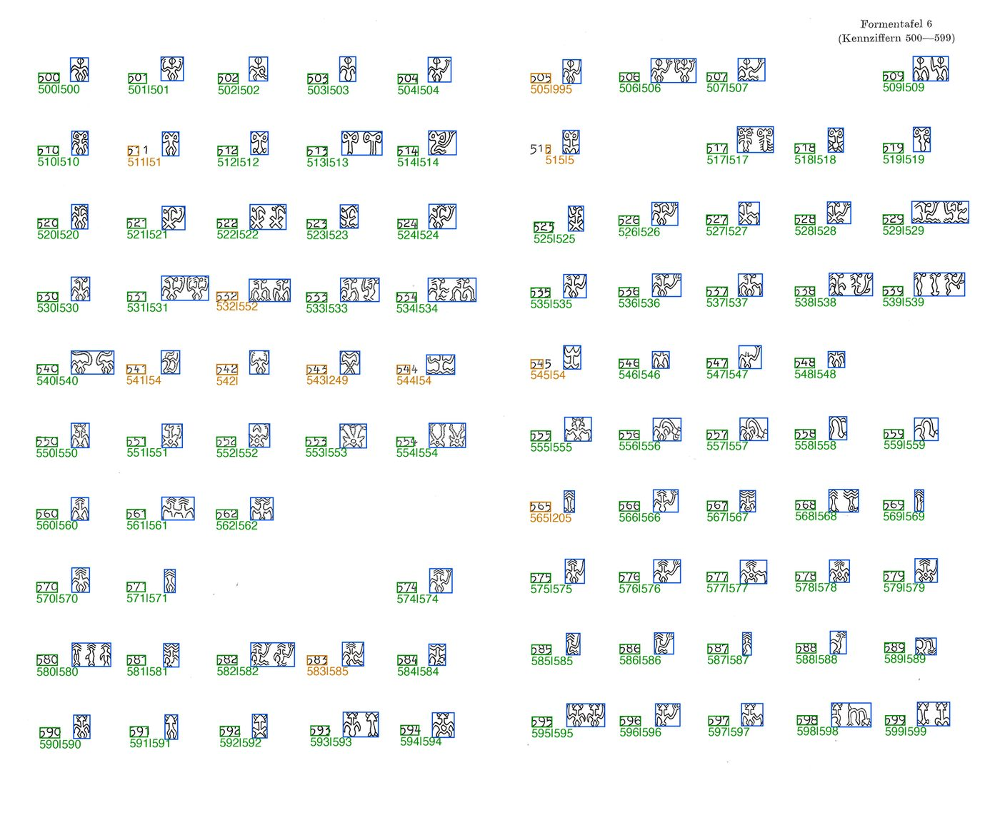
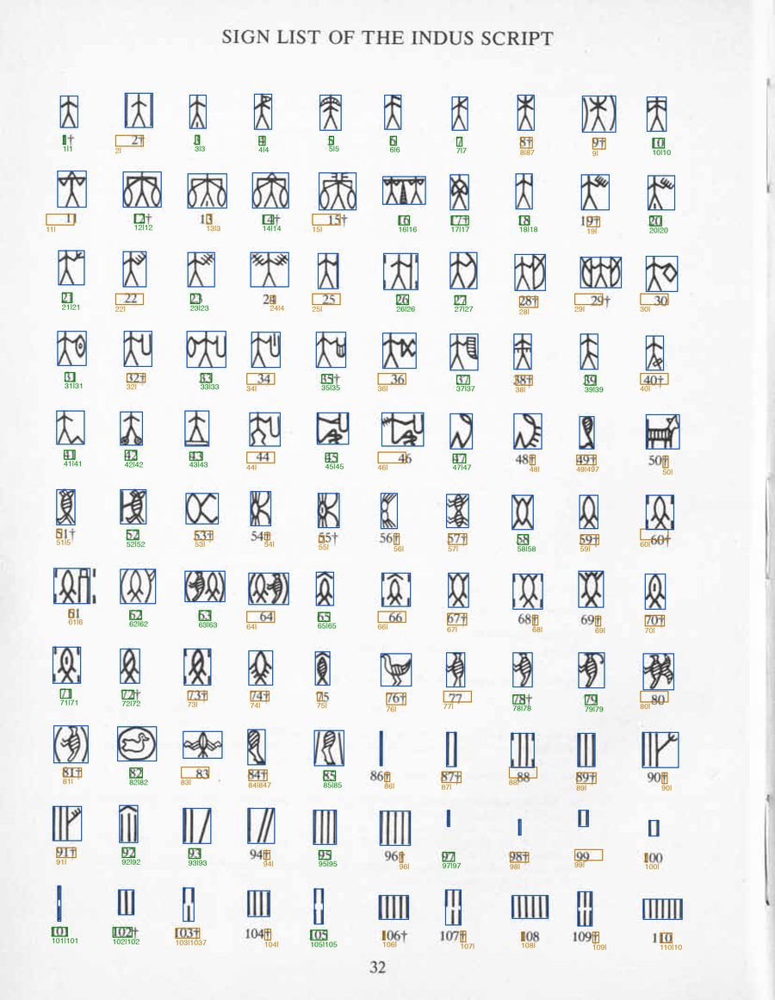
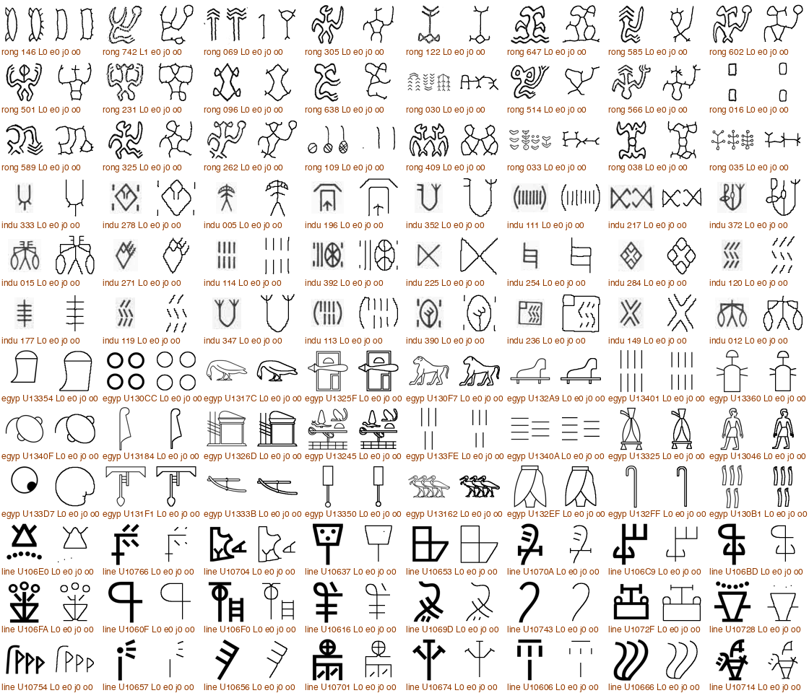
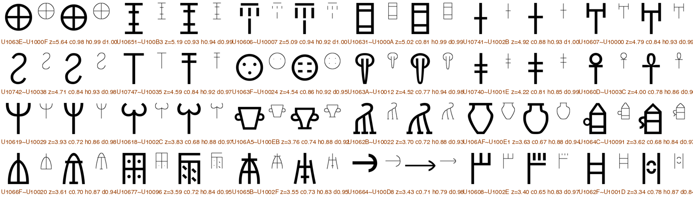
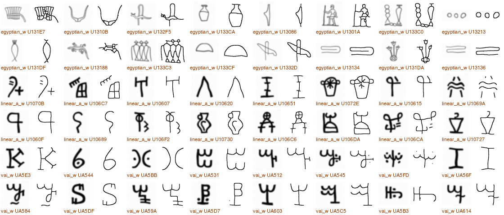

The claim, and a metric that also needs testing
In 1932 a Hungarian engineer, Guillaume de Hevesy, told the Paris Académie that dozens of signs from the Indus Valley seals matched the rongorongo glyphs of Easter Island. The chart below, a later redrawing, still circulates. On 3 September 2026 it was posted again, and a historian replied that twenty-four look-alikes out of some five hundred signs is "4.8% similarity", and that the drawings were made by hand by someone trying to highlight resemblances.
Both sides are half right. Twenty-four selected pairs prove nothing on their own, because two inventories of 400 to 600 signs offer a quarter of a million candidate pairings, and a motivated eye will find look-alikes in any two pictographic systems. But dividing 24 by 500 is not a test either. The only honest question is: are the Indus and rongorongo inventories more alike than two unrelated scripts are, when every script gets the same chance?
We built an exploratory test from scanned sign catalogues, and this page records the result. Every number here is produced by code in the repository, from public sources, with the choices explained.

The verdict
Under this metric applied to the selected catalogue drawings, the Indus–rongorongo pair did not stand out. Their overall similarity lands in the middle of the pack of unrelated script pairs (rank of 55 on the main statistic), far below the one pair in the set that is genuinely related (Linear A and Linear B). One thing did stand out at first: among the controls, Indus was rongorongo's single best match, winning of the nearest-neighbour lineup where chance is 10%. That advantage vanished when the control scripts were given hand-drawn wobble to match the two scanned sources, dropping to : the ranking was sensitive to the drawing-style intervention. And of the 24 famous pairs, the chart drawings resemble each other more than the catalogue signs they depict in cases; only catalogue pair (the figure-eight) clears the match threshold.
Three caveats travel with this verdict, and they are spelled out in section 10: this compares catalogue drawings, not photographs of tablets and seals; the controls are font renderings; and shape similarity, however measured, can never establish or exclude historical contact by itself. The independent-rendition check also limits interpretation: the combined metric retrieved the correct sign first in about 75% of queries, below HOG alone at about 81%. This is a result about a particular representation and metric; human-visible similarity needs its own validation.
What was compared
Two target inventories and twenty-two controls. The two targets come from the standard scholarly catalogues, scanned: Iravatham Mahadevan's 1977 sign list of 417 Indus signs (the archive.org scan of The Indus Script: Texts, Concordance and Tables, book pages 32 to 35), and Thomas Barthel's 1958 Formentafeln, the eight plates of numbered rongorongo glyph drawings that every later study cites (the kohaumotu.org scan, 391 pixels per inch). Every sign was cut out by code and its number read from the page, then checked visually on contact sheets and against the list of Barthel numbers used by the kohaumotu glyph library.
The controls are the sign inventories of twenty-two other scripts, rendered from Google's Noto fonts: every encoded character of the script's Unicode block. They span five thousand years, four continents, pictographic and abstract systems, and inventory sizes from 22 to 1,165. Two of them, Linear A and Linear B, are known to be related; several small alphabets (Phoenician, Old Italic, Carian, Lycian, Runic) are known relatives too. Those pairs are the positive controls: any method that cannot see them has no business judging the Indus pair.
How the two scanned inventories were extracted
Barthel's plates set each glyph to the right of its code number in a fixed grid: the units digit is the column, the tens digit the row, the hundreds digit the plate. The extractor finds every typeset numeral by size, groups them into labels, snaps the labels to the grid, derives each glyph's number from its grid position, and reads the label with OCR as an independent check. Mahadevan's list is a ten-column grid with numbers running consecutively, so position alone fixes the number and OCR again serves as the check. The overlays below are what the code saw; the coloured boxes are its decisions. Green means the position-derived number and the OCR agree.


data/qa/.How every sign was measured
The three sources are drawn differently. Barthel's glyphs are hollow outline drawings, Mahadevan's are thin line drawings, and font glyphs are filled silhouettes. Compared directly, the numbers would mostly measure drawing style. So every sign, from every script, is first reduced to the same thing: its medial skeleton, a one-pixel-wide stick version of the shape, rendered into a 64-pixel box. Outline drawings have the gap between their double contour closed first, with a radius set from the measured gap on the Barthel scan; nothing else is source-specific.

Three independent similarity measures are then computed between skeletons, and combined by averaging their z-scores. The z-scores use a mean and standard deviation fixed once, from 200,000 random sign pairs drawn across all scripts, so the combination is identical for every pair and was never tuned on the Indus–rongorongo pair.
- Chamfer distance. The average distance from each pixel of one skeleton to the nearest pixel of the other, in both directions, turned into a similarity with
exp(-d/4). The purest geometric measure. A horizontal mirror is allowed, for every pair alike, since chart-makers allow it. - Histogram of oriented gradients. A classic hand-engineered descriptor of local stroke directions, compared by cosine similarity.
- DINOv2 embedding. A frozen, general-purpose vision model (ViT-S/14, trained on natural images, never fine-tuned here) applied to the skeleton image, compared by cosine similarity. It is one channel among three, not a judge; no language model looks at any pair.
What counts as a match. A threshold was fixed as the combined similarity exceeded by only 0.1% of random cross-script sign pairs. A pair at or above it is called a match. Complexity is the skeleton's length; "complex" signs are those above the median across the large scripts ( pixels).
Statistics per script pair. Inventories differ in size, and a bigger inventory offers more chances of a fluke, so every statistic is computed on both scripts subsampled to 200 signs, twenty times over, and averaged. The main one is the best-24 score: the mean similarity of the 24 best one-to-one matches, chosen greedily, which is exactly what a chart-maker does. Alongside it: the match rate (matches per 10,000 candidate pairs), the mean nearest-neighbour similarity, and both restricted to complex signs.
Does the method see relatedness at all? Yes. Linear B was adapted from Linear A around 1450 BCE. Their best-24 score is the highest of the 55 pairs, and their top matches are, to the eye, the same signs.
Does the metric recognise a glyph it has seen drawn differently? The kohaumotu glyph library holds an independent rendition of the same Barthel glyphs at 24 by 40 pixels, about a tenth of the resolution of the plates. Used as queries against the 604-glyph inventory, the combined metric returns the true glyph first 75% of the time and within the top five 89% of the time; chance is 0.17%. Chamfer and HOG alone do as well or better (72% and 81% top-one); the DINOv2 channel alone manages only 12%, which is why it carries a third of the weight and not more, and why the per-metric results in section 5 matter. The script is pipeline/validate_metric.py.
Where the metric is coarse. It works on skeletons in a 64-pixel box, so it under-weights small distinguishing details: an oval with a plain stroke and an oval with a forked stroke score almost alike, as do a figure-eight and a barred rectangle. That coarseness makes the metric generous to look-alikes, not stingy, so it biases the test toward finding similarity. In the audit of the 24 chart pairs (section 8) it meant the reviewer overrode the automatic identification in eleven cases, usually promoting the second- to fifth-ranked candidate; the outright misses were the blurry, thumbnail-sized chart drawings of the figure-eight and the U.

Result 1: is Indus a special match for rongorongo?
Eleven scripts have at least 197 signs and can be subsampled fairly: the two targets and nine controls. That gives 55 script pairs, all scored identically. The chart plots them on one axis.
Two readings of the same numbers, and both matter. Ranked against every other pair, Indus–rongorongo is unremarkable. But look only at rongorongo's partners and Indus comes first on nearly every statistic; look only at Indus's partners and rongorongo comes near the bottom. Rongorongo is far from everything, and Indus is a little less far from it than the font-rendered scripts are.
That asymmetry is the interesting thing in this data, and there is an obvious mundane explanation for it. The Indus and rongorongo inventories are the only two that are scanned hand drawings. Every control is a crisp font. If "looks hand-drawn" leaks through skeletonisation into the measures, Indus would be rongorongo's best match for a reason that has nothing to do with the signs. Section 6 tests exactly that.
Result 2: the drawing-style confound, tested
Every font-rendered control glyph was passed through a random elastic distortion and a scanner-like blur before entering the pipeline, with one fixed set of parameters for all scripts and no tuning. The result looks like a hand copy of the printed sign. Then the comparisons against both targets were repeated with the wobbled controls.

The conclusion is not subtle. Almost all of Indus's apparent edge as rongorongo's best partner was the shared texture of hand-drawn scans. What remains after wobbling the controls is within the spread of unrelated scripts. This is the kind of artefact that a chart of twenty-four drawings can never reveal and a full-inventory comparison exposes immediately.
Result 3: the blind best-24 tournament
The circulating chart is a "best 24" for one pair of scripts, chosen by a person. Here every pair of large scripts gets its own best 24, chosen by the same algorithm from the full inventories, drawn in the same style. The labels are hidden. Judge which panels look like related scripts, then reveal.
Result 4: the 24 chart pairs, audited
Finally, the chart itself. Each of its 48 drawings was cut out and run through the same pipeline, and the nearest catalogue signs were listed. A reviewer then recorded which catalogue sign each drawing depicts, keeping the automatic pick unless it was plainly wrong, and flagging the identifications that remain uncertain. Every decision is in data/fidelity/mapping.json, with the runners-up shown on each card so you can disagree.
Two numbers per pair. Chart is the similarity of the two drawings on the chart to each other. Catalogue is the similarity of the two real signs they depict, and the percentile of that value among all Indus–rongorongo catalogue pairs.
The bottom row of the chart, the "nearly identical" simple shapes, is where the real matches are: the figure-eight, the oval with a stroke, the crescent, the lollipop, the fir tree. Those are also the signs with the least design space, forms with many opportunities to recur in graphic systems. The anthropomorphic rows, which would carry real weight if they matched as families, mostly resolve to catalogue signs that are ordinary Indus stick figures and ordinary rongorongo figures, alike at the level of "a person with something at the right hand" and not much beyond.
Result 5: small alphabets and known relatives
The eleven large scripts leave out thirteen small ones, including the alphabets whose family trees are documented. A second panel scores every pair of all 24 scripts at the size of the smallest inventory (22 signs, best-8 matching, 40 repeats). It is a noisier statistic, but it puts the known relatives on the same axis as the Indus pair.
What this does and does not show
It is a catalogue-level test. Barthel's tables and Mahadevan's list are themselves normalised drawings by careful scholars, not photographs of tablets and seals. That is a large step up from an advocate's chart, and it is the level at which the claim has always been argued, but a photo-level version, using the Corpus of Indus Seals and Inscriptions and the new 3D tablet models from Bologna, is the obvious next step. The pipeline is built to take it.
The controls are fonts. Font designers regularise shapes; scribes do not. The wobble experiment shows how much that matters, and it matters a lot. The clean fix is a scanned, hand-drawn sign list of an unrelated script as a control, and we would welcome pointers to one with a regular enough layout to extract.
Sign counting is contested. Barthel's 600 forms include variants and compounds; Pozdniakov argues for about 52 basic signs. Mahadevan's 417 has its own splitting decisions. A version at the level of basic signs and modifiers, and a test of whether base-plus-modifier families map across the scripts, is in the research plan and not done here.
Shape cannot settle history. Even a strong graphic anomaly would not show contact, and a null result does not prove independence of every individual sign. What this test answers is the narrow, falsifiable question the chart poses: whether these two inventories resemble each other more than unrelated inventories do, under a method that demonstrably detects real relatedness. They do not.
What would change the verdict. An Indus–rongorongo score in the top few of the 55 pairs after wobbled controls; an excess of reciprocal, high-complexity matches; or a mapping of sign families that survives permutation. None of those appeared. The data and code are here for anyone who thinks a different, pre-specified measure would find them.
Reproduce it
Everything runs on a laptop in under an hour. The repository holds the raw scans, the fonts, every intermediate file, the QA contact sheets, and the results. The steps, in order:
python -m venv .venv && . .venv/bin/activate pip install -r requirements.txt # numpy scipy scikit-image opencv pillow fonttools torch brew install tesseract # OCR check of the catalogue numbers python pipeline/extract_barthel.py # 8 plates -> data/glyphs/rongorongo/*.png python pipeline/extract_mahadevan.py # 4 pages -> data/glyphs/indus/*.png python pipeline/render_fonts.py # 22 fonts -> data/glyphs/<script>/*.png python pipeline/normalize.py <scripts> # skeletons -> data/norm/ python pipeline/features.py <scripts> # chamfer, HOG, DINOv2 -> data/features/ python pipeline/wobble.py <scripts> # scan-like controls python pipeline/experiments.py # every statistic -> data/results/results.json python pipeline/fidelity.py # cut the chart, nearest catalogue signs python pipeline/fidelity_stats.py # score the 24 pairs -> data/fidelity/pairs.json python pipeline/build_site.py # this page's data and images
Random seeds are fixed in the code. The only manual step is data/fidelity/mapping.json, the reviewer's identification of the 24 chart drawings, and the automatic candidates are kept alongside it so the step can be audited or replaced.
| Source | Used for |
|---|---|
| Mahadevan 1977, archive.org scan | 417 Indus signs (book pp. 32–35) |
| Barthel 1958 Formentafeln, kohaumotu.org scan | 604 rongorongo glyphs (8 plates) |
| kohaumotu glyph library | List of Barthel numbers, cross-check |
| Noto fonts (OFL) | 22 control inventories |
| DINOv2 ViT-S/14 | Frozen embedding channel |
| de Hevesy 1933, Persée | History; the text only, plates not reproduced there |
| Ferrara et al. 2024 | Tablet dating context |
Catalogue images are reproduced for scholarly comparison from the sources above; the code and derived data are released under the MIT licence.
The inventories
Every sign as extracted, with its catalogue number. Hover a sign to see its skeleton and complexity counts.